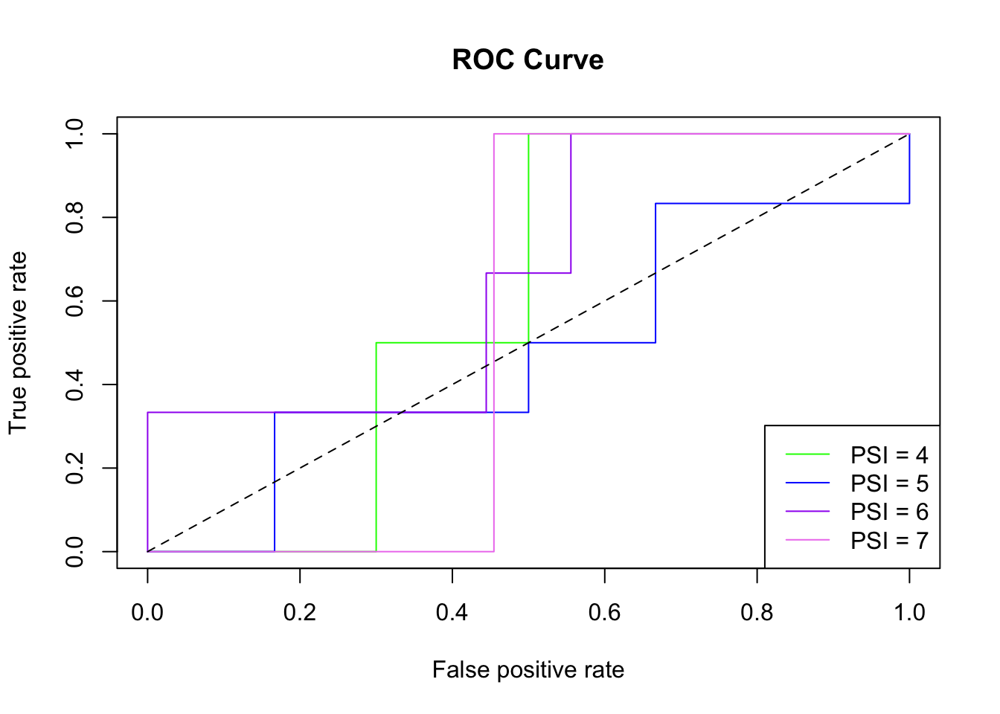

Week 4 Machine learning
This week you will learn about machine learning for classification using R. Objectives are:
To provide an overview of the underlying concepts of machine learning for classification.
To provide an introduction to some popular classification algorithms.
To explore these classification algorithms using various packages in R.
To apply various classification algorithms to the statewide COVID-19 dataset.
4.1 Day 22 (Monday) Zoom check-in
Here is an overview of what we’ll cover in today’s Zoom session:
Overview of the COVID-19 Machine Learning Dataset (10 minutes)
Overview of Machine Learning for Classification (20 minutes)
Introduction to the Random Forest algorithm (5 minutes)
A Random Forest Example in R using COVID-19 Data (25 minutes)
4.1.1 A COVID-19 Dataset for Machine Learning
We’d like to predict the severity of COVID-19 in a given state using statewide feature data like population, urban density, number of hospital beds, date of stay at home order, etc. We’ve already seen that we can get the information about cases and deaths from the New York Times github page. However, gathering corresponding statewide feature data requires quite a bit of hunting through various public websites. Consequently, we’re going to skip over the painstaking process of marshalling the feature data and just provide you with a dataset that is already nice and prepped for machine learning.
You’ll work with two .csv files - a data file that contains a veriety of statewide data, and a metadata file that describes the various columns of the data file. This combination of data and metadata files is a common way of sharing datasets.
To give you an idea of what was involved in assembling the data and metadata file, a summary of the data collection and processing steps is given below:
First, a snapshot of the New York Times (NYT) COVID-19 data from April 27th was downloaded from the nytimes github repo and stored on local disk.
The NYT COVID-19 data was processed using R :
The cases and deaths in
us-counties_04_27_2020.csvwere aggregated into statewide values.The death rate was calculated and categorized according to an 8-point severity index.
Finally, the statewide data (augmented with death rate and severity index) was exported as a
.csvfile.library(readr) library(dplyr) ## ## Attaching package: 'dplyr' ## The following objects are masked from 'package:stats': ## ## filter, lag ## The following objects are masked from 'package:base': ## ## intersect, setdiff, setequal, union ## get data from file covid_data_file <- file.path("./workdir", "us-counties_04_27_2020.csv") ## read the data as a tibble us_data <- read_csv(covid_data_file) ## Parsed with column specification: ## cols( ## date = col_date(format = ""), ## county = col_character(), ## state = col_character(), ## fips = col_character(), ## cases = col_double(), ## deaths = col_double() ## ) ## aggregate by county and state county_state <- us_data %>% group_by(county, state) %>% summarize(cases = max(cases), deaths = max(deaths)) ## aggregate by state state <- county_state %>% group_by(state) %>% summarize(cases = sum(cases), deaths = sum(deaths)) ## calculate death rate state <- state %>% mutate(death_rate = 100.00 * deaths / cases) # Assign the following severity index using cut: ## PSI Death.Rate ## 1 < 0.1% ## 2 0.1% - 0.5% ## 3 0.5% - 1.0% ## 4 1.0% - 2.0% ## 5 2.0% - 4.0% ## 6 4.0% - 6.0% ## 7 6.0% - 8.0% ## 8 >8.0% state <- state %>% mutate( severity_index =cut( death_rate, breaks = c(0.0, 0.1, 0.5, 1.0, 2.0, 4.0, 6.0, 8.0, 100.0), labels = 1:8 ) ) ## write out as csv my_out_file <- file.path("./workdir", "covid_data.csv") write_csv(state, my_out_file)
The resulting statewide COVID-19 label data (i.e. what we would like to predict) was augmented with 32 statewide features, including population, percent urban, number of hospital beds, etc. Feature data was collected from a veriety of sources, including the Center for Disease Control, the American Heart Association, the U.S. Census Bureau, etc. In some cases the feature data was available for direct download (e.g. as a
.csvfile) and in other cases the feature data was manually harvested (e.g. cut-and-paste from websites).The augmented (i.e. features + labels)
.csvfile was split into two.csvfiles that you will need to download:statewide_covid_19_data_04_27_2020.csv: This file contains the final COVID-19 machine learning data set, but features and labels are coded so that feature columns are named
X01,X02,X03, etc. and label colunms are namedY01,Y02,Y03, etc.statewide_covid_19_metadata_04_27_2020.csv: This file maps the column names in the data file to more meaningful names and desciptions (including units) of the associated variables. For example
X01isPct_Sunand has a description ofPercent sunny days. This is known as metadata - data that describes other data.
Click on the links above to download the data and metadata files that you’ll need for the machine learning examples presented throughout the week.
4.1.2 A Machine Learning Primer
Machine Learning (ML) may be defined as using computers to make inferences about data.
- A mapping of inputs to outputs, Y = f(X , \(\beta\))
ML for Classification refers to algorithms that map inputs to a discrete set of outputs (i.e. classes or categories)
For example, predicting health risk (mild, moderate, severe) based on patient data (height [m], weight [kg], age [years], smoker [yes/no], etc.)
Or predicting pandemic severity index (PSI) of COVID-19 in a state based on statewide population data.
## PSI Death.Rate Example
## 1 < 0.1% seasonal flu
## 2 0.1% - 0.5% Asian flu
## 3 0.5% - 1.0% n/a
## 4 1.0% - 2.0% n/a
## 5 > 2.0% Spanish fluPredictions are typically expressed as a vector of probabilities.
e.g. Pr(cancerous) vs. Pr(benign)
e.g. Pr(PSI=1), Pr(PSI=2), …, Pr(PSI=5)
A “Black Box” View of Machine Learning
The diagram below illustrates the machine learning concept in terms of a “black box” model that converts inputs into predictions.

A “Black Box” Example
The diagram below illustrates a more concrete machine learning model that converts height, weight, and age into a prediction of whether or not the individual is male or female.

Some Important Machine Learning Terms
The above example highlights some important machine learning terminology:
Features (X): Features are the inputs to the model. They are also known as descriptive attributes or explanatory variables. In terms of R, a single set of features corresponds to a tuple or row of data and a complete set of feature data maps nicely to a data frame or tibble.
Parameters (\(\beta\)): Parameters are internal variables of the selected machine learning algorithm. They are also known as coefficients or training weights. These internal parameters need to be adjusted to minimize the deviation between predictions and observations. The machine learning algorithms and pacakages that we’ll be using in R take care of this minimization process for us.
Labels (Y): Labels are the outputs of the algorithm, corresponding to the categories you are attempting to predict.
Training Data: Training data is a data set containing paired observations of inputs (i.e features) and outputs (i.e. labels). Training data is also known as measurement data, observation data or calibration data.
Training: Training is the process of adjusting internal algorithm paramters (\(\beta\)) to obtain the best possible match between training data and corresponding model predictions. Training is also known as model calibration or parameter estimation.
An example set of training data that could be used in the gender prediction example is given below. The frist three columns contain feature data and the last column contains label data. We could use this data to train a model to predict a person’s gender based on their height, weight and age.
## height_m weight_kg age_y gender
## 1.69 62 30 male
## 1.74 76 27 female
## 1.92 82 25 male
## 1.80 100 41 male
## 1.59 47 24 female
## 1.85 75 26 male
## 1.75 63 33 female
## 1.96 83 33 male
## 1.85 39 32 male
## 1.78 58 28 female
## 1.74 70 30 female
## 1.81 57 26 female
## 1.73 78 32 male- Test Data: Like training data, test data is a data set containing paired observations of inputs (i.e features) and outputs (i.e. labels). However, test data is deliberately not included in the training process. Performance measures computed using test data help to quantify the expected performance of the model if/when it is applied to unlabeled data.
Upon completion of training, it is important to evaluate the quality of the model and its skill or ability at making correct predictions. Some terms related to this evaluation process are defined below:
Classification Accuracy: Classification accuracy is the ratio of correct predictions to the total predictions. Classification accuracy can be computed using the training data set or using the test data set.
Confusion Matrix: The confusion matrix is a more detailed summary (relative to classification accuracy) of the performance of a classification algorithm. The diagonals of the confusion matrix count how often the algorithm yields the correct classification for each class. The off-diagonal entries count how often the algorithm confuses one class with another.
The figure below illustrates the classification accuracy and confusion matrix for an example that attempts to classify images of fruits.

The Machine Learning Process
Now that we’ve defined some of the important machine learning terminology let’s take a 30,000 foot view at the overall machine learning process. This is a general description of the process that you can follow each time you build and use a machine learning model. The process is illustrated in the figure below (with credit to Jinesh Maloo):

Step 1: Prepare labeled data for training and validation.
Step 2: Select a machine learning algorithm (i.e. model).
Step 3: Train the model.
Step 4: Evaluate model performance.
If model is useful:
- Step 5: Apply to unlabled data.
Else (needs improvement):
Collect more data (go back to Step 1).
Revise model (go back to Step 2)
4.1.3 The Random Forest Algorithm
The random forest algorithm is a popular choice for machine learning.
Over 20 R packages have an implementation of some form of the algorithm.
We’ll be using the
randomForestpacakge.The algorithm is like
bagging(boostrap aggregating) regression trees, but the rgression trees are de-correlated.
The figure below illustrates one possible tree in a random forest for a gender prediction model. In computer science terminology, each split in the figure is a branch of a graph tree. In simple terms, the split points are randomly generated and the resulting trees combine to form a random forest.

The figure below illustrates a set of 6 trees that make up a random forest for predicting housing prices. The image is courtesy Bradley Boehmke at the University of Cincinnati. Examine the figure closely and notice that:
The split variables can differ across trees (not all variables are included in all trees).
The split variables can differ within trees (not all paths consider the same set of variables).
The order of splits can differ.
The split values can differ.

The job of the random forest algorithm is to determine the optimal set of trees for your data set, including the splitting configuration of each tree (i.e. order, values, etc.).
Now you have a basic understanding of machine learning and the random forest algorithm. You’re probably excited to get going with applying the algorithm! But first, we need to have a data set to work with. In the next section you’ll learn about a data set that can be used for predicting the severity of COVID-19 in a state.
4.1.4 A Random Forest Example Using COVID-19 Data
Let’s apply the random forest algorithm to the COVID-19 dataset. We’ll build out the required R code in sections. To get started, open a new R script in RStudio and name it covid_19_rf.R. Enter the code below, but omit lines that begin with a double-hash (##) because these are the expected output:
#
# Part 1 - load the data
#
library(randomForest)
## randomForest 4.6-14
## Type rfNews() to see new features/changes/bug fixes.
##
## Attaching package: 'randomForest'
## The following object is masked from 'package:dplyr':
##
## combine
library(readr)
library(dplyr)
data_file <- file.path("assets", "statewide_covid_19_data_04_27_2020.csv")
df <- read_csv(data_file)
## Parsed with column specification:
## cols(
## .default = col_double(),
## State = col_character(),
## X31 = col_character(),
## X32 = col_character()
## )
## See spec(...) for full column specifications.
# coerce severity to a factor (so RF algorithm uses classification)
df <-
df %>%
mutate(Y04 = as.factor(df$Y04))
metadata_file <- file.path("assets", "statewide_covid_19_metadata_04_27_2020.csv")
mdf <- read_csv(metadata_file)
## Parsed with column specification:
## cols(
## ID = col_double(),
## Code = col_character(),
## Variable = col_character(),
## Description = col_character()
## )
mdf
## # A tibble: 36 x 4
## ID Code Variable Description
## <dbl> <chr> <chr> <chr>
## 1 1 X01 Pct_Sun Percent sunny days
## 2 2 X02 Total_Hours_Sun Total hours of sun
## 3 3 X03 Num_Clear_Days Number of clear days
## 4 4 X04 Avg_RH Average relative himidity
## 5 5 X05 Avg_Dew_Point Average dew point
## 6 6 X06 Total_Population Total population
## 7 7 X07 Senior_Pop_Thousands Population 65+ years in thousands
## 8 8 X08 Senior_Pop_Pct Percentage of population 65+ year
## 9 9 X09 per_capita_income per capita income
## 10 10 X10 Unemployment_Rate Percent unemployment
## # … with 26 more rowsTry to run the code. You may get an error about missing the randomForest package. You can install it from the RStudio console (see below) or using the installer in the RStudio packages pane.
Now we’ve loaded the data and metadata file. Let’s pick a subset of 5 of the features and use them to try and predict the pandemic severity index (i.e. Y04). Add the Part 2 code below to your RScript but omit lines that begin with a double-hash (##) :
#
# Part 2 - select features and label
#
# describe all possible features and labels
print(mdf, n = nrow(mdf))
## # A tibble: 36 x 4
## ID Code Variable Description
## <dbl> <chr> <chr> <chr>
## 1 1 X01 Pct_Sun Percent sunny days
## 2 2 X02 Total_Hours_Sun Total hours of sun
## 3 3 X03 Num_Clear_Days Number of clear days
## 4 4 X04 Avg_RH Average relative himidity
## 5 5 X05 Avg_Dew_Point Average dew point
## 6 6 X06 Total_Population Total population
## 7 7 X07 Senior_Pop_Thousa… Population 65+ years in thousands
## 8 8 X08 Senior_Pop_Pct Percentage of population 65+ year
## 9 9 X09 per_capita_income per capita income
## 10 10 X10 Unemployment_Rate Percent unemployment
## 11 11 X11 Uninsured_Rate_Ch… Percent uninsured children
## 12 12 X12 Uninsured_Rate_Ad… Percent uninsured adults
## 13 13 X13 Heart_Disease_Rate Deaths per 100000 due to heart disease
## 14 14 X14 Heart_Disease_Dea… Total deaths due to heart disease
## 15 15 X15 Tobacco_Use_Rate Percentage of tobacco users
## 16 16 X16 Obesity_Prevalenc… Percentage of population this is considered o…
## 17 17 X17 Num_Hospitals Number of hospitals
## 18 18 X18 Num_Hosp_Staffed_… Number of hospital beds
## 19 19 X19 Total_Hosp_Discha… Total number of hospital discharges
## 20 20 X20 Hosp_Patient_Days Total number of patient days in hospital
## 21 21 X21 Hosp_Gross_Patien… Total hospital gross patient revenue
## 22 22 X22 Number_of_Farms Total number of farms
## 23 23 X23 Urban_Population_… Percentage of population living in urban areas
## 24 24 X24 Urban_Population Total urban population
## 25 25 X25 Urban_Land_Area_S… Amount of urban land area in square miles
## 26 26 X26 Urban_Density_Sq_… Urban density in persons per square mile
## 27 27 X27 Urban_Land_Pct Percentage of land use classified as urban
## 28 28 X28 Pct_Republican Percentage of population registered republican
## 29 29 X29 Pct_Independent Percentage of population not affiliated with …
## 30 30 X30 Pct_Democrat Percentage of population registered democrat
## 31 31 X31 Stay_at_Home_Star… Date stay at home order issued
## 32 32 X32 Stay_at_Home_End_… Date stay at home order scheduled to be lifted
## 33 1 Y01 cases total number of covid-19 cases
## 34 2 Y02 deaths total number of covid-19 deaths
## 35 3 Y03 death_rate death rate as a percentage
## 36 4 Y04 severity_index severity index based on death_rate: ## 1 = < …
# select some features and the severity index label
my_x <- c("X01","X10","X12","X13","X23")
my_y <- "Y04"
my_xy <- c(my_x, my_y)
# get descriptions of the selected features and label
mdf %>% filter(Code %in% my_xy)
## # A tibble: 6 x 4
## ID Code Variable Description
## <dbl> <chr> <chr> <chr>
## 1 1 X01 Pct_Sun Percent sunny days
## 2 10 X10 Unemployment_Ra… Percent unemployment
## 3 12 X12 Uninsured_Rate_… Percent uninsured adults
## 4 13 X13 Heart_Disease_R… Deaths per 100000 due to heart disease
## 5 23 X23 Urban_Populatio… Percentage of population living in urban areas
## 6 4 Y04 severity_index severity index based on death_rate: ## 1 = < 0.1…
# subset the dataframe
rf_df <- df %>% select(all_of(my_xy))Now we’ll add code to create and train a basic Random Forest model. Add the Part 3 code below to your RScript but omit lines that begin with a double-hash (##):
#
# Part 3 - create and train the model
#
# split into train (75%) and test (25%) datasets
#
# note that `row_nubmer()` generates a vector of row numbers, and
# > c(1, 2, 3, 4, 5, 6) %% 4 is
# [1] 1 2 3 0 1 2
train <- rf_df %>% filter((row_number() %% 4) %in% 1:3)
test <- rf_df %>% filter(row_number() %% 4 == 0)
# create and train the RF model
model <- randomForest(Y04 ~ X01 + X10 + X12 + X13 + X23,
data = train)
# show results, includes confusion matrix for training data
model
##
## Call:
## randomForest(formula = Y04 ~ X01 + X10 + X12 + X13 + X23, data = train)
## Type of random forest: classification
## Number of trees: 500
## No. of variables tried at each split: 2
##
## OOB estimate of error rate: 65.79%
## Confusion matrix:
## 3 4 5 6 7 8 class.error
## 3 0 0 1 0 0 0 1.0000000
## 4 0 0 1 1 0 0 1.0000000
## 5 0 0 7 8 0 0 0.5333333
## 6 0 1 8 6 0 0 0.6000000
## 7 0 0 1 3 0 0 1.0000000
## 8 0 0 0 1 0 0 1.0000000
# measure of parameter importance
importance(model)
## MeanDecreaseGini
## X01 3.864809
## X10 5.506581
## X12 5.997087
## X13 4.585045
## X23 4.982478At this point the model is trained and the next step is to evaluate its usefulness at making predictions. Let’s see how the model does at predicting the labels of the test dataset. Remember that the test data was not used during the training exericse. As such, the confusion matrix and classification accuracy associated with the test dataset provides a useful check of the skill of the model. Add the Part 4 code below to your RScript but omit lines that begin with a double-hash (##) :
#
# Part 4 - evaluate the model using test data
#
# extract test predictions
preds <- predict(model, test)
# confusion matrix
actual <- factor(test$Y04)
predicted <- factor(preds)
common_levels <- sort(unique(c(levels(actual), levels(predicted))))
actual <- factor(actual, levels = common_levels)
predicted <- factor(predicted, levels = common_levels)
confusion <- table(actual,predicted)
print(confusion)
## predicted
## actual 4 5 6 7
## 4 0 1 1 0
## 5 0 3 3 0
## 6 0 2 1 0
## 7 0 0 1 0
#classification accuracy
accuracy <- sum(diag(confusion)/nrow(test))
cat("Classification Accuracy = ", accuracy, "\n")
## Classification Accuracy = 0.3333333Save your script and run it. Take a look at the results for the test dataset - the classifcation accuracy is well under 50%. Furthermore, there are systematic failures in the confusion matrix. It’s not a very good model. The most likely culprit is that the set of features is inadequate for making the desired prediction. We should re-run the model using different or additional features.
4.2 Day 23 - Support Vector Machines
For today’s independent work you will learn about the Support Support Vector Machine (SVM) algorithm and apply it to the COVID-19 data that you worked with on Monday.
The SVM algorithm seeks to determine an optimal hyperplane that separates labeled observations.
Hyperplanes can be linear or non-linear.
Support vectors are data points lying closest to the optimal hyperplane.
The
e1071package in R provides an implementation of SVM.
The figure below illusrates a linear SVM. Line \(H_3\) provides the optimal separation between the white and black data points. Points with perpendiculars to \(H_3\) are the support vectors for the dataset. The SVM algorithm classifies unlabeled data points by examining their location with respect to the optimal hyperplane. Data points above line \(H_3\) would be classified as “black” and datapoints below the line would be calssified as white.

4.2.1 An SVM Example using COVID-19
We’ve already laid a large part of the groundwork for machine learning with the random forest example. With a few modifications, the covid_19_rf.R script can be adapted to use an SVM algorithm instead of Random Forest.
Open your
covid_19_rf.Rscript in RStudioClick
File --> Save As ...and name the filecovid_19_svm.RIn
Part 1ofcovid_19_svm.R, replacelibrary(randomForest)withlibrary(e1071). This will load thesvmalgorithm instead of therandomForestalgorithm.In
Part 3of the code, replacerandomForest()withsvm()and add the following argument to thesvm()function:probability = TRUE. Thesvm()code should look something like this:
- The
svm()package does not provide useful implementations ofprint(model)orimportance(model). Comment out, or delete, those lines ofPart 3and replace withsummary(model). When you are finished, the final section of thePart 3code should look something like this:
# show results, includes confusion matrix for training data
# print(model)
#
# measure of parameter importance
# importance(model)
#
# summarize the trained SVM
summary(model)That’s it! The rest of the code (i.e. Part 4) can be re-used. Save your covid_19_svm.R script and run it. How does the SVM algorithm perform in comparison with the Random Forest algorithm?
4.3 Day 24 - the \(k\)-Nearest Neighbors Algorithm
For today’s independent work you will learn about the \(k\)-Nearest neighbors (KNN) algorithm and apply it to the COVID-19 data.
For a given unlabeled data point (\(X^*\)) the KNN algorithm identifies the nearest \(k\) labeled data points.
Euclidean distance is typical
Normalization of data is necessary to prevent biased distances.
The label of \(X^*\) is predicted to be the most frequently occurring label among the \(k\) nearest neighbors.
The
classpackage in R provides an implementation of KNN.
The figure below illustrates the KNN approach and is courtesy of Antti Ajanki. For \(k=3\), the neighborhood contains 2 triangles and 1 square so we’d predict \(X^*\) is a triangle. For \(k=5\), the neighborhood contains 3 squares and 2 triangles so we’d predict \(X^*\) is a square.
{kind=link}

With a few modifications, the covid_19_svm.R script can be adapted to use an KNN algorithm instead of SVM.
Open your
covid_19_svm.Rscript in RStudioClick
File --> Save As ...and name the filecovid_19_knn.RIn
Part 1ofcovid_19_knn.R, replacelibrary(e1071)withlibrary(class). This will load theknnalgorithm instead of thesvmalgorithm.The KNN algorithm requires the feature data to be normalized. Add the following line in
Part 1ofcovid_19_knn.R. Add the line after thedf <- df %>% mutate(Y04 <- as.factor(Y04))line, as shown below. If necessary, useinstall.packages('BBmisc')to install theBBmiscpackage and itsnormalize()function.
df <- df %>% mutate(Y04 <- as.factor(Y04))
df <- BBmisc::normalize(df, method = "range") # add this line- In
Part 3of the code, replacesvm()withknn()and adjust the call toknn()so that it looks like this:
model <- knn(select(train, all_of(my_x)),
select(test, all_of(my_x)),
train$Y04,
k = 7,
prob = TRUE)- The
knn()package does not provide useful implementationsprint(model),importance(model), orsummary(model). Comment out, or delete, those lines ofPart 3. When you are finished, the final section of thePart 3code should look something like this:
# show results, includes confusion matrix for training data
# print(model)
#
# measure of parameter importance
# importance(model)
#
# summarize the trained SVM
# summary(model)- In
Part 4of the script, replace:
with:
That’s it! The rest of the code can be re-used. Save your covid_19_knn.R script and run it. How does the KNN algorithm perform in comparison with the Random Forest and SVM algorithms?
4.4 Day 25 - Exploring the KNN Algorithm
For today’s independent work you will learn explore the algorithm settings of the KNN algorithm.
Open your covid_19_knn.R script and locate the line that creates the KNN model (model = knn(...)). Adjust the number of neighbors so that k = 5 and re-run the script. Record the classification accuracy. Try again, but use k = 3.
Re-run each experiment several times (e.g. collect 10 trials of k=5 and 10 trials of k=3, and so on). For a given value of k, do you get the same result each time?
Continue with these numerical experiments until you’ve filled out the table below:
## k_value average_classification_accuracy
## 1 ???%
## 3 ???%
## 5 ???%
## 7 ???%
## 9 ???%
## 11 ???%
## 13 ???%
## 15 ???%
## 17 ???%What do the results suggest about the most appropriate setting for k? Can you think of a better way to perform the numerical experiments and collect the results?
4.5 Day 26 (Friday) Zoom check-in
Today we’ll check how you’re doing with using machine learning in R. Then we’ll get you prepared for weekend activities, where you’ll continue to explore modeling using the COVID-19 dataset.
4.5.1 Review and trouble shoot (25 minutes)
Has everyone had a chance to try out at least one of the machine learning algorithms?
Has anyone tried additional or alternative combinations of features?
What is the best classification accuracy that you have been able to obtain?
What parameters appear to be the most important?
4.5.2 This weekend (25 minutes)
ROC/AUC - Another Measure of Machine Learning Performance
We’ve already seen how classification accuracy and the confusion matrix give an indication of the performance of a trained machine learning algorithm. It’s also good practice to examine the “ROC curve” and related “AUC” metrics.
- ROC curve: As illustrated in the figure below, the ROC (Receiver Operating Characteristic) curve plots the true positive (TP) vs. false positive (FP) rate at various probability thresholds. In the figure, the dashed blue line represents a hypothetical ROC curve for some machine learning model and the solid red line is the curve for a “non-informative” model (i.e. a model that makes a uniform random guess). As such, we’d like the blue curve to be as far above the red curve as possible.

AUC: AUC stands for “area under curve” and is the area under the ROC curve. In the previous figure, the AUC would be the area under the dashed blue curve. Values of AUC quantify the degree to which an ROC curve lies above (or below) the “non-informative” curve. Some interesting AUC values:
AUC = 0.0: the model is always wrong (with respect to TP vs. FP)
AUC = 0.5: the model is no better than guessing (i.e. the model matches the red “non-informative” curve in the figure)
AUC = 1.0: the model is always right (with respect to TP vs. FP)
For a problem with multiple classes (as opposed to a binary True/False, Male/Female, or Yes/No problem) we can compute the ROC curve curve and AUC measures using a “one vs. all” approach:
First, extract predicted probabilities from the RF model (the scores).
Next, extract actual classification for each category.
Finally, leverage three commands of the
ROCRmodule:prediction(): retrieve scoresperformance(): generates TPR, FPR, and AUC measures through two separate callsprint(): generates a TPR vs. FPR plot
The ROC/AUC calculation is fairly involved so we’ll create a helper function for it and then incorporate the helper function into our machine learning scripts.
#
# Part 5 - ROC/AUC
#
# roc_one_vs_all()
# A helper function to compute one vs. all ROC/AUC for a given level (i)
roc_one_vs_all <- function(i) {
if(is.na(sum(probs))){
return(NA)
}
actual <- as.numeric(y_test[[1]] == i)
score <- probs[,i]
pred <- ROCR::prediction(score, actual)
perf <- ROCR::performance(pred, "tpr", "fpr")
ROCR::plot(perf,
main="ROC Curve",
col=cols[as.numeric(i)],
add = i != lvls[[1]])
# calculate the AUC and print
auc_i <- ROCR::performance(pred, measure="auc")
as.numeric(auc_i@y.values)
}
# prepare data for computing ROC/AUC
x_test <- select(test, all_of(my_x))
y_test <- select(test, all_of(my_y))
# how we obtain probs depends on the algorithm
if (inherits(model, "randomForest"))
{
probs <- predict(model, x_test, type='prob')
} else if (inherits(model, "svm"))
{
probs <- predict(model, x_test, probability = TRUE)
probs <- attributes(probs)
probs <- as.data.frame(probs$probabilities)
probs <- probs[,order(colnames(probs))]
} else # the KNN alg requires approximation of probabilities
{
# highest predicted probabilities
pnrst <- attributes(model)$prob
# corresponding one-based categories
y_one <- as.numeric(min(levels(df$Y04))) - 1
vpreds <- as.integer(as.character(preds)) - y_one
# map probabilities into a matrix of zeroes
probs <- matrix(0.00,
nrow = length(pnrst),
ncol = length(levels(df$Y04)))
probs[cbind(seq_along(vpreds), vpreds)] <- pnrst
# coerce to data frame
probs <- data.frame(probs)
colnames(probs) <- levels(df$Y04)
}
lvls <- unique(as.character(y_test[[1]]))
cols <- c("red","orange","yellow","green",
"blue","purple","violet","black")
# vapply helper function across levels
auc <- vapply(lvls, roc_one_vs_all, numeric(1))
# tack on legend and non-informative line
legend("bottomright",
legend=paste("PSI =",lvls),
col=cols[as.numeric(lvls)],
lty=1,
cex=1.0)
lines(x=c(0,1),
y=c(0,1),
lty=2)
# display AUC metrics
print(tibble(lvls, auc))
## # A tibble: 4 x 2
## lvls auc
## <chr> <dbl>
## 1 4 0.6
## 2 5 0.514
## 3 6 0.630
## 4 7 0.682Assuming you’ve been following along with the daily activities, you can add this Part 5 code to any of your algorithm scripts (e.g. covid_19_rf.R, covid_19_knn.R, covid_19_svm.R, etc.). The code uses the inherits() function to adapt the output of each individual algorithm into a form that is suitable for the ROC/AUC calculation.
4.6 Day 27
Today you’ll explore different combinations of features in your COVID-19 model.
Select another 5 features and adjust
Part 2andPart 3of yourcovid_19_rf.Rscript. InPart 2you’ll need to adjust themy_xvariable and inPart 3you’ll need to adjust the model formula (e.g.Y04 ~ X01 + ....). Re-run the script and record the error rate, confusion matrix, and measures of parameter importance.Repeat the above step after adding an additional 5 features.
How does the performance of the model change as more features are included?
Does any particular parameter stand out in terms of importance?
What does the most important parameter correspond to in termo of the metadata?
4.7 Day 28
Today you’ll explore making some tweaks to the random forest model to see if you can improve its performance on the COVID-19 dataset. The algorithm parameters that you’ll be adjusting are described below:
ntree: The number of trees to grow. Default is 500.mtry: The number of variables randomly sampled as candidates at each split. Default issqrt(p)wherepis the number of features included in the model.
Let’s perform some numerical experiments to explore how these algorithm parameters effect model performance:
Setup a random forest model that has at least 16 features (see instructions from yesterday’s activity).
In
Part 3of yourcovid_19_rf.Rscript, add the following arguments to therandomForest()function:ntree = 1000mtry = 8
Re-run the script and record the error rate, confusion matrix, and measures of parameter importance.
Repeat the above process using:
ntree = 2000mtry = 2
Does adjusting the parameters effect the model performance? If so, what observations can you make?
Can you think of a “better” way to evaluate the influence of algorithm parameters?
Congratulations - you made it through a week of machine learning boot camp! You can download completed scripts (i.e. Part 1 through Part 5) for each algorithm using the links below: